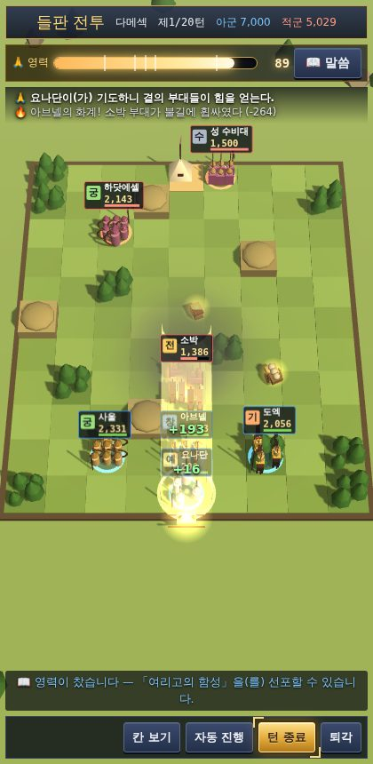
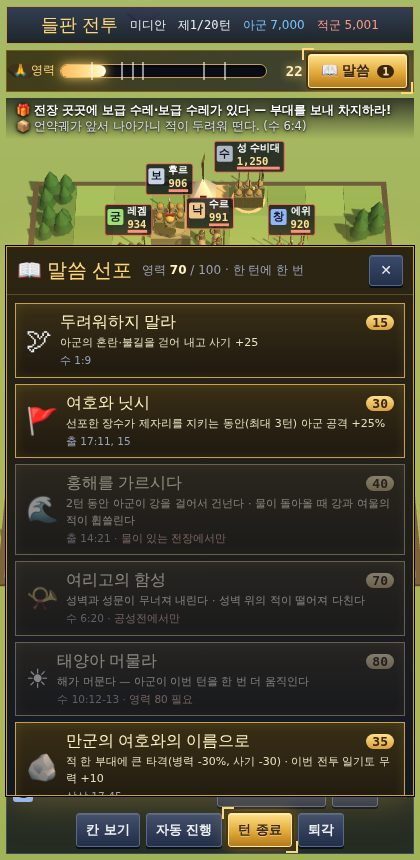
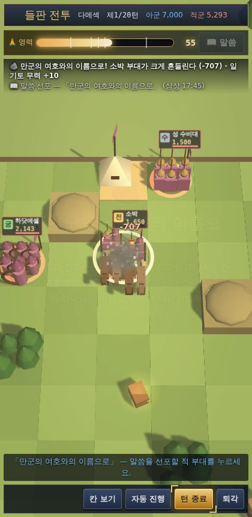

"이는 하나님의 군대라" (창 32:2) 족장 시대부터 신구약 중간 시대까지 — 여섯 시대의 하나님의 군대를 이끌고 애굽·앗수르·바벨론·그리스·로마의 땅으로 나아가 하나님 나라를 세운다
게임 주소https://oseungnam3-ops.github.io/-/bible-samguk/PC · 휴대폰 브라우저에서 바로 실행 · 설치 필요 없음
목차
1게임 소개마하나임 하나님의 군대 · 한눈에 보는 흐름
2시작하기접속 · 시대 고르기 · 주인공 만들기 · 저장
3화면과 지도영지 화면 · 가나안 지도 · 세계 지도
4내정과 3D 성명령 · 건물 레벨업 · 자원 · 제작 · 장수 만나기 · 걷기
5전쟁출전 · 병종 편성과 상성 · 3D 전투 · 계략 · 일기토 · 전리품
6신앙 전투기도와 영력 · 말씀 선포 · 성물
7사명(미션) 수행하기목표 종류 · 보상 · 하나님 나라 단계 · 성경 사건
8여섯 시대 이야기족장 · 출애굽 · 사사 · 통일 왕국 · 분열 왕국 · 신구약 중간
9인물도감그림이 있는 인물 157명
10초보자 공략과 자주 묻는 질문처음 10턴 따라 하기 · FAQ
부록용어 사전
💡 도움말
이 설명서의 화면은 휴대폰 크기로 찍은 실제 게임 화면입니다. PC에서도 배치는 같고 화면만 넓습니다.
1게임 소개
「성경 삼국지」는 성을 다스리고 장수를 거느리며 전쟁으로 땅을 넓혀 가는 역사 전략 시뮬레이션입니다. 플레이어는 언제나 「마하나임 하나님의 군대」(창 32:1-2)를 이끌고, 시대마다 그 시대 믿음의 사람들과 함께 가나안 일곱 족속, 암몬·모압·에돔·블레셋, 애굽·아람·앗수르·바벨론, 바사·그리스·로마와 맞섭니다.
이 게임의 목표
여섯 시대마다 사명(미션) 6장과 승리 목표가 있습니다. 성을 차지하는 것만이 목표가 아니라, 인물들과 대화하며 사명을 이루고, 백성을 돌보고 신앙을 지킬 때 「하나님 나라」 점수가 자랍니다(0~100, 여섯 단계).
전쟁에서는 칼만이 아니라 기도와 말씀이 무기입니다. 기도로 영력을 채우고, 말씀을 선포하면 「여리고의 함성」, 「하늘에서 내린 불」 같은 큰 힘이 나타납니다.
📖 말씀
적국의 왕과 장군, 도시 이름은 역사에서 확인된 인물과 지명을 썼습니다. 성경의 역사보다 게임이 더 나아가는 부분(예: 로마까지 진군)은 해설에서 "성경의 역사에서는 …, 이 게임에서는 …"으로 밝혀 두었습니다.
한눈에 보는 게임 흐름
① 시대 고르기 (여섯 시대)
② 주인공 만들기 (선택)
③ 영지·3D 성에서 내정 명령 장수 1명당 1명령
④ 사명 확인 · 성경 사건
⑤ 출전 · 3D 전투 기도·말씀·계략·일기토
⑥ 턴 종료 = 한 계절
↻ ③~⑥ 반복
게임의 특징
특징
내용
여섯 시대
족장 · 출애굽과 가나안 정복 · 사사 · 통일 왕국 · 분열 왕국 · 신구약 중간 — 시대마다 6장의 사명과 20~34개의 성경 사건
세계 지도
가나안에서 애굽, 메소포타미아(앗수르·바벨론), 바사, 소아시아, 헬라, 로마까지 — 실제 지형으로 그린 지중해 세계
3D 성
장터·농장·훈련장·제단에서 장수와 백성을 만나 대화하고 명령, 걷기 모드
3D 전투와 병종
창병·궁수·물매병·기마·전차·코끼리·낙타 — 상성이 있는 부대를 직접 지휘, 화계의 불길과 교란이 눈에 보인다
신앙 전투
기도로 영력을 채우고, 말씀 카드를 선포하고, 언약궤·모세의 지팡이 같은 성물을 쓴다
전리품
전투마다 희귀도(일반·희귀·영웅·전설)가 있는 아이템, 쓰러뜨린 적장의 칼
인물 · 음악
웹툰풍 인물 157명 · 찬송가 23곡 경음악 메들리 · 인물 목소리
2시작하기
2-1. 게임 접속하기
휴대폰이나 PC의 인터넷 브라우저(크롬·사파리·엣지)를 엽니다.
주소창에 https://oseungnam3-ops.github.io/-/bible-samguk/ 를 입력합니다.
휴대폰에서는 공유 메뉴 → “홈 화면에 추가”를 누르면 앱처럼 아이콘으로 실행할 수 있습니다.
화면을 한 번 누르면 배경음악(찬양 메들리)이 시작됩니다.
타이틀 — 이어하기 · 불러오기 · 인물 갤러리 · 소리 · 설명서여섯 시대 — 시대 카드와 「하나님의 군대」 버튼
2-2. 시대 고르기
타이틀 화면을 아래로 내리면 여섯 시대의 카드가 연대순으로 나옵니다.
카드의 해설을 읽고 「하나님의 군대」 버튼을 누릅니다.
「내 주인공으로 시작」 또는 「역사 인물로 시작」을 고릅니다.
💡 도움말
처음이라면 통일 왕국이나 출애굽이 쉽습니다. 처음 8턴 동안은 적이 하나님의 군대의 성을 치지 않습니다.
2-3. 내 주인공 만들기
주인공 만들기 — 이름·얼굴·직업·자리
「내 주인공으로 시작」을 고르면 내가 직접 성경 이야기 속 하나님의 군대의 일원이 됩니다. 사명 대화마다 주인공의 대사가 들어갑니다.
항목
고르는 것
설명
이름
8자까지
그 시대의 성경 인물 이름과 겹치면 다시 짓게 합니다.
성별 · 얼굴
남 4종 · 여 4종
용사 · 목동 · 선지자 · 지략가 / 여전사 · 사사 · 선지자 · 지혜자
직업
용사 · 지략가 · 선지자 · 목자 왕
직업마다 기본 능력치가 다르고, 보너스 15점을 직접 나눕니다.
자리
군주로 / 장수로
군주로: 군대를 직접 이끕니다. 장수로: 그 시대의 지도자를 섬기며 합류합니다.
직업
무력
지력
정치
매력
신앙
어울리는 역할
용사
85
55
50
65
70
출진 · 일기토 · 훈련
지략가
55
88
75
65
65
계략(화계·교란) · 상업 · 인재
선지자
35
80
55
75
95
제사 · 전투에서 기도(영력) · 말씀
목자 왕
75
70
72
88
85
군주 · 구휼 · 징병 · 등용
2-4. 저장과 이어하기
자동 저장 — 명령·전투·턴이 끝날 때마다 이 기기의 브라우저에 저장됩니다. 타이틀의 「이어하기」로 계속합니다.
수동 저장 — 국가 → 저장·불러오기에서 슬롯 1~3에 저장합니다.
다른 기기로 옮기기 — 「저장 코드 복사」 → 다른 기기에서 「저장 코드로 불러오기」.
⚠️ 주의
예전 판(일곱 시나리오)의 저장도 그대로 이어 할 수 있습니다. 예전 시나리오를 새로 시작하려면 주소 뒤에 ?classic=1을 붙이세요.
3화면과 지도
영지 화면 — 게임의 기본 화면
영지 화면 읽는 법
자원 바 — 식량 · 목재 · 석재 · 금 · 병력 · 신앙 · 나라 점수
지도자 초상 — 누르면 능력치와 성경 기록
세력 · 연도 · 계절 · 턴, 붉은 띠는 전체 전투력
미니맵과 영지 / 지도 / 세계 / 메뉴 전환 버튼
왼쪽 바로가기 — 임무(사명) · 영웅 · 성경도감 · 내 영토 · 연대기
건물 표시 — 숫자는 레벨, 초록 화살표는 명령·공사 가능
사명 바 — 지금 장의 목표와 진행도
턴 종료 — 계절을 넘깁니다
하단 메뉴 — 영지 · 영웅 · 출전 · 사명 · 연대기 · 국가
💡 도움말
영지 그림은 끌어서 둘러볼 수 있습니다. 지역에 따라 예루살렘풍·해안·가나안 요새·광야 성채 그림이 나옵니다.
가나안 지도 — 세력별 영토와 성, 가장자리의 「○○ 방면」 화살표세계 지도 — 애굽에서 바벨론·로마까지
가나안 지도
세력 깃발 — 세력의 색과 첫 글자. 👑 왕관은 도읍.
성 이름표 — 이름과 (세력). 내 성은 ★와 금색 고리.
숫자 상자 — 그 성의 병력. 「사명 !」 — 지금 사명의 목표 성.
가장자리 화살표 — "애굽 방면 ←"처럼 가나안 밖으로 이어지는 길. 누르면 세계 지도에서 그 성을 비춥니다.
끌어서 이동, 두 손가락(마우스 휠)으로 확대.
세계 지도 (「세계」 버튼)
실제 지형(나일·유브라데·티그리스 강, 홍해, 페르시아만, 흑해)으로 그린 지중해 세계입니다.
하나님의 군대는 칼과 창만으로 싸우지 않습니다. "너는 칼과 창과 단창으로 내게 나아오거니와 나는 만군의 여호와의 이름으로 네게 나아가노라" (삼상 17:45). 전투 화면 위쪽의 🙏 영력 막대가 신앙 전투의 중심입니다.

🙏 기도 — 빛이 오르며 영력이 찬다
6-1. 기도와 영력
전투를 시작하면 영력이 조금 차 있습니다(기름 뿔·언약궤가 있으면 더).
장수가 🙏 기도로 한 턴을 쓰면 영력이 찹니다. 선지자·제사장은 두 배로 채우고 곁의 부대를 치유합니다.
군대의 평균 신앙이 높을수록 영력이 빨리 찹니다 — 평소 제사와 성전 레벨이 전투의 힘이 됩니다.
영력이 차면 📖 말씀 버튼이 빛납니다. 막대의 눈금은 카드마다 필요한 영력입니다.
6-2. 말씀 선포

말씀 카드 — 필요한 영력과 효과
📖 말씀을 누르면 이 시대에 열린 말씀 카드가 나옵니다.
카드를 고르고, 필요하면 대상(적 부대·내 부대)을 누릅니다.
성경 구절이 화면에 나타나고 큰 3D 효과가 펼쳐집니다.
한 턴에 한 장. 카드마다 다시 쓰기까지 몇 턴이 걸리고, 어떤 카드는 한 전투에 한 번.

「만군의 여호와의 이름으로」 선포
말씀 카드 목록
카드
영력
효과
말씀
🕊 두려워하지 말라 족장 시대부터
25
아군의 혼란·불길을 걷어 내고 사기 +25
아브람아 두려워하지 말라 나는 너의 방패요 너의 지극히 큰 상급이니라 창 15:1
🐏 여호와 이레 족장 시대부터
35
모든 아군 병력 10% 회복
아브라함이 그 땅 이름을 여호와 이레라 하였으므로 오늘날까지 사람들이 이르기를 여호와의 산에서 준비되리라 하더라 창 22:14
👼 하나님의 군대 족장 시대부터
50
하늘 군대가 둘러싼다 — 2턴 동안 아군이 받는 피해 -30%
하나님의 사자들이 그를 만난지라 야곱이 그들을 볼 때에 이르되 이는 하나님의 군대라 하고 그 땅 이름을 마하나임이라 하였더라 창 32:1-2
🚩 여호와 닛시 출애굽 시대부터
40
선포한 장수가 제자리를 지키는 동안(최대 3턴) 아군 공격 +25%
모세가 손을 들면 이스라엘이 이기고 손을 내리면 아말렉이 이기더니 … 모세가 제단을 쌓고 그 이름을 여호와 닛시라 하고 출 17:11, 15
🌊 홍해를 가르시다 출애굽 시대부터
50
2턴 동안 아군이 강을 걸어서 건넌다 · 물이 돌아올 때 강과 여울의 적이 휩쓸린다
모세가 바다 위로 손을 내밀매 여호와께서 큰 동풍이 밤새도록 바닷물을 물러가게 하시니 물이 갈라져 바다가 마른 땅이 된지라 출 14:21
📯 여리고의 함성 가나안 정복부터
80
성벽과 성문이 무너져 내린다 · 성벽 위의 적이 떨어져 다친다
백성이 나팔 소리를 들을 때에 크게 소리 질러 외치니 성벽이 무너져 내린지라 백성이 각기 앞으로 나아가 그 성에 들어가서 그 성을 점령하고 수 6:20
☀ 태양아 머물라 가나안 정복부터
90
해가 머문다 — 아군이 이번 턴을 한 번 더 움직인다
태양아 너는 기브온 위에 머무르라 달아 너도 아얄론 골짜기에서 그리할지어다 하매 태양이 머물고 달이 멈추기를 백성이 그 대적에게 원수를 갚기까지 하였느니라 수 10:12-13
🔥 기드온의 나팔과 횃불 사사 시대부터
60
모든 적이 혼란 · 붙어 있는 적끼리 서로 친다
나팔을 불며 항아리를 부수고 … 외쳐 이르되 여호와와 기드온의 칼이다 하고 … 여호와께서 그 온 진영에서 친구끼리 칼로 치게 하시므로 삿 7:20, 22
🪨 만군의 여호와의 이름으로 통일 왕국부터
45
적 한 부대에 큰 타격(병력 -30%, 사기 -30) · 이번 전투 일기토 무력 +10
너는 칼과 창과 단창으로 내게 나아오거니와 나는 만군의 여호와의 이름 곧 네가 모욕하는 이스라엘 군대의 하나님의 이름으로 네게 나아가노라 삼상 17:45
⚡ 하늘에서 내린 불 분열 왕국부터
55
불기둥 — 과녁 -25%, 둘레 -10%, 불이 붙고 코끼리는 날뛴다
이에 여호와의 불이 내려서 번제물과 나무와 돌과 흙을 태우고 또 도랑의 물을 핥은지라 왕상 18:38
💡 도움말
카드는 시대에 따라 열리고, 성물로도 열립니다 — 모세의 지팡이는 「홍해를 가르시다」「여호와 닛시」, 엘리야의 겉옷은 「하늘에서 내린 불」, 언약궤는 「여리고의 함성」. 시편·율법 두루마리는 말씀에 드는 영력을 줄여 줍니다.
6-3. 성물과 신앙 물품
성경 사건과 전리품으로 얻습니다. 성물은 쓰고도 사라지지 않습니다.
물품
희귀도
효과
기름 뿔
희귀
전투 시작 영력 +30 (삼상 16:13)
시편 두루마리
희귀
말씀 선포에 드는 영력 -25%
만나 항아리 · 성물
희귀
성물 — 출진 군량이 들지 않는다 (출 16:33)
성막의 등불 · 성물
희귀
성물 — 기도로 모으는 영력 +50% (출 27:20)
믿음의 방패 · 성물
희귀
성물 — 아군이 받는 피해 -12%, 사기 +10 (엡 6:16)
우림과 둠밈 · 성물
영웅
성물 — 화계·교란 적중 +20% (출 28:30)
아론의 싹 난 지팡이 · 성물
영웅
성물 — 선지자·제사장의 기도 효과 두 배 (민 17:8)
놋뱀 · 성물
영웅
성물 — 매 턴 아군 병력 4% 회복, 불 피해 절반 (민 21:9)
율법 두루마리 · 성물
영웅
성물 — 말씀의 효과 +25% (신 31:26)
구원의 투구 · 성물
영웅
성물 — 대장 일기토 무력 +5, 아군이 교란에 덜 걸린다 (엡 6:17)
기드온의 나팔과 항아리 · 성물
영웅
성물 — 「기드온의 나팔과 횃불」을 열고 전투 시작에 적진을 흔든다 (삿 7:16)
다윗의 물매 · 성물
영웅
성물 — 물매병 피해 +20% · 「만군의 여호와의 이름으로」를 연다 (삼상 17:49)
모세의 지팡이 · 성물
전설
성물 — 「홍해를 가르시다」「여호와 닛시」를 열고 말씀 영력 -10 (출 4:17)
엘리야의 겉옷 · 성물
전설
성물 — 「하늘에서 내린 불」을 열고 아군이 강을 건넌다 (왕하 2:8)
언약궤 · 성물
전설
성물 — 영력 매 턴 +12, 적 사기 -10 · 「여리고의 함성」을 연다 (수 6:4)
6-4. 전쟁 도구와 전리품 아이템
아이템
희귀도
효과
공성 사다리
일반
성벽의 방어 효과를 절반으로 줄인다
물매 돌
일반
적에게 주는 피해 +12%
군량 수레
일반
출진 군량 소모를 절반으로
길르앗의 유향
일반
치료 약초 — 매 턴 아군 병력 3% 회복, 전투 뒤 부상병 10% 복귀 (렘 8:22)
큰 방패
희귀
아군이 받는 피해 -20%
횃불과 항아리
희귀
첫 합에 기습 — 적 병력 -12%, 화계 적중 + (삿 7:20)
합성 활
희귀
궁수·물매병 사거리 +1, 원거리 피해 +15%
여호와 닛시 군기
희귀
아군 사기 +15, 부대가 무너져도 사기 하락 절반 (출 17:15)
불화살
희귀
궁수의 화살에 불 — 30% 확률로 적을 태우고 코끼리를 날뛰게 한다, 화계 +15%
양각 나팔
영웅
적의 사기를 꺾어 병력 -8%, 계략 적중 +
애굽 군마
영웅
기마·전차 이동 +1, 돌격 피해 +15% (왕상 10:28)
놋 투구
영웅
아군이 받는 근접 피해 -12% (삼상 17:38)
충차
영웅
성벽 효과 -35%, 성문을 세 배로 부순다
솔로몬의 금 방패
영웅
성물 — 아군이 받는 피해 -10% (왕상 10:17)
골리앗의 칼
전설
성물 — 일기토에서 대장의 무력 +15 (삼상 21:9)
나귀 턱뼈
전설
성물 — 일기토 무력 +12, 대장 부대 공격 +10% (삿 15:15)
요나단의 활
전설
성물 — 궁수·물매병 피해 +25% (삼하 1:22)
7사명(미션) 수행하기
사명은 시대의 이야기를 따라가는 장(章)별 미션입니다. 시대마다 6장 — 인물들의 대화 → 목표 → 보상 → 마무리 대화 순서로 진행되고, 이루면 다음 장이 열립니다.
사명 대화 — 인물 초상과 목소리
사명을 수행하는 순서
화면 아래 사명 바에 지금 장의 제목과 목표, 진행도가 보입니다.
사명 바나 왼쪽 「임무」를 누르면 사명 화면 — 목표·보상·지나온 장.
지도의 「사명 !」 표시가 목표 성입니다.
목표를 이루면 “사명 완수” 대화와 보상, 다음 장.
지난 대화는 사명 화면의 「대화 보기」로 다시 봅니다.
목표 예시
이렇게 이룹니다
“○○에서 제사를 드린다” · “성벽을 쌓는다”
해당 건물에서 그 명령을 필요한 횟수만큼
“○○을 차지한다”
출전·정벌로 그 성을 차지
“성 N곳” · “평균 신앙 N”
전쟁으로 성을 늘리기 · 제사와 성전 레벨업
“장수 N명” · “○○와 우호 N”
인재·포로 등용·사건 / 외교(친선)·포로 석방
“성전 Lv.N”
건물 업그레이드
성경 사건 완료(깃발)
턴이 지나며 일어나는 사건에서 선택
마지막 장
그 시대의 목표 성들(예: 유브라데에서 애굽 지경까지)을 차지하고 평균 신앙 60 이상
하나님 나라 여섯 단계
사명을 이루고, 구휼을 베풀고, 포로를 너그럽게 풀어 주고, 말씀에 순종하는 선택을 할 때 나라 점수가 오릅니다.
점수
단계
모습
0+
광야의 장막
흩어진 백성이 한 장막 아래 모였다.
20+
지파의 연합
지파들이 한 뜻으로 모이기 시작한다.
40+
왕국의 기초
성읍이 세워지고 질서가 잡힌다.
60+
공의의 나라
약한 자가 돌봄을 받고 재판이 바르다.
80+
언약의 나라
백성이 말씀 앞에 스스로 겸손하다.
100+
하나님 나라
"공의를 물 같이, 정의를 마르지 않는 강 같이" (암 5:24)
성경 사건
턴이 지나면 시대마다 성경의 실제 사건이 차례로 일어납니다. 사건 창에는 성경 본문 요약과 선택지가 나오고, 선택에 따라 신앙·민심·나라 점수·병력·성물이 달라지며 인물이 합류하거나 떠납니다. 지도자도 역사대로 이어집니다(예: 모세 → 여호수아, 사울 → 다윗 → 솔로몬).
📖 말씀
“순종이 제사보다 낫고” (삼상 15:22) — 성경이 교훈으로 남긴 사건에서는 말씀에 순종하는 선택이 나라 점수를 크게 올립니다. 성읍이 셋 이하로 줄면 「마하나임 — 하나님의 군대」 사건으로 하늘의 도움이 오기도 합니다(창 32:1-2; 왕하 6:17).
사명 공략 요령
한 턴에 모든 장수를 쓰세요. 쉬는 장수가 없어야 발전이 빠릅니다.
처음 8턴(적이 치지 않는 기간)에 왕궁·병영·성전을 올리고 징병·훈련을 해 두세요.
선지자·제사장을 전투에 데려가면 영력이 빨리 찹니다.
마지막 장은 먼 강국의 도읍까지 원정합니다. 군량과 원정 경로를 미리 준비하세요.
8여섯 시대 이야기
여섯 시대는 연대순으로 이어집니다. 어느 시대부터 시작해도 됩니다. 시대마다 하나님의 군대의 지도자가 바뀌고, 맞서는 나라와 왕도 역사에 따라 달라집니다.
에스라; 느헤미야; 에스더; 학개; 스가랴; 말라기; 다니엘 5–12장; 요 10:22 · 역사 자료: 마카비1·2서(외경), 요세푸스
스룹바벨
바벨론, 바사, 애굽, 사마리아 총독 산발랏, 아라비아 (게달), 이두매, 아스돗 (해안 성읍), 시돈·두로
31개
BC 2090 · 창세기 12–50장; 히브리서 11:8-22
족장 시대
"너는 너의 고향과 친척과 아버지의 집을 떠나 내가 네게 보여 줄 땅으로 가라" (창 12:1). 일흔다섯 살의 아브람이 하란을 떠나 헤브론 마므레 상수리나무 숲에 장막을 쳤다. 아브라함·이삭·야곱·요셉 사대 약 이백 년을 한 시대로 압축했다. 야곱은 하란에서 돌아오는 길에 하나님의 사자들을 만나 "이는 하나님의 군대라" 하고 그 곳을 마하나임이라 불렀다 (창 32:1-2) — 이 게임의 플레이어 세력 "마하나임 하나님의 군대"가 그 이름을 딴 것이다. 성경의 역사에서 족장들은 성을 빼앗는 정복자가 아니라 장막에 거하는 나그네였다(히 11:9). 이 게임에서는 그들이 이끄는 무리를 하나의 군대로 삼아, 엘람 왕 그돌라오멜의 원정군을 단까지 쫓고, 제단과 우물과 언약으로 약속의 땅에 머물며, 마지막에는 기근 속 애굽에서 요셉의 지혜로 고센 땅을 얻는다.
아브라함이삭야곱요셉멜기세덱그돌라오멜
나라들
나라
왕 · 지도자
도읍 · 성
⭐ 하나님의 군대
아브라함
헤브론 · 2성
살렘
멜기세덱
예루살렘 · 1성
그랄
아비멜렉
가사 · 2성
소돔 (요단 온 들)
소돔 왕 베라
여리고 · 1성
세겜 (히위 족속)
하몰
세겜 · 1성
세일 (에서의 족속)
에서
보스라 · 1성
하란 (라반의 집)
라반
하란 · 1성
엘람 (동방 연합)
그돌라오멜
수사 · 3성
시날 (바벨론)
아므라벨
바벨론 · 2성
애굽
바로
멤피스 · 4성
승리 목표 — 나그네로 살며 약속의 땅에 제단을 쌓고 열두 지파를 이룬다. 헤브론·브엘세바·벧엘·세겜·마하나임 — 족장들이 장막을 치고 제단을 쌓고 우물을 판 다섯 곳을 지키고, 기근 속 애굽에서 요셉을 통해 고센 땅을 얻는다 (창 13:14-17; 28:13-15; 47:6; 히 11:9-10). 성경의 역사에서 족장들은 땅을 차지하지 않고 약속을 바라보았다. 이 게임에서는 그 약속의 자리들을 지키는 것을 승리로 삼는다.
사명 6장
떠나라, 복이 될지라 창 12:1-9 목표: 벧엘 동쪽 제단에서 제사를 두 번 드린다
단까지 쫓아가다 창 14장 목표: 엘람 원정군을 쫓아 단을 차지한다
약속의 아들과 르호봇 창 21–26장 목표: 그랄 왕 아비멜렉과 화평 언약을 맺는다 (관계 70)
마하나임 — 하나님의 군대 창 28–33장 목표: 하란에서 온 집안을 데려와 군대의 사람 16명을 이룬다
벧엘로 올라가라 창 35장 목표: 하나님의 군대 평균 신앙 65 이상
기근과 고센 땅 창 37–50장; 히 11:21-22 목표: 다섯 장막 터와 고센 땅을 지키고 신앙 60을 이룬다
성경 사건
떠나라, 복이 될지라 창 12:1-20
롯과 갈라서다 창 13장
네 왕의 전쟁 — 단까지 쫓아가다 창 14:1-16
살렘 왕 멜기세덱의 축복 창 14:17-24; 히 7:1-4
두려워하지 말라 — 횃불 언약 창 15장
아브라함의 중보와 소돔의 멸망 창 18–19장
이삭의 출생과 모리아 산 창 21:1-21; 22:1-19; 히 11:17-19
막벨라 굴과 리브가 창 23장; 24장; 25:7-10
르호봇 — 그랄의 우물과 브엘세바 언약 창 26:12-33; 21:22-34
벧엘의 사닥다리 창 25:27-34; 27장; 28:10-22
하란의 이십 년과 미스바 언약 창 29–31장
마하나임 — 이는 하나님의 군대라 창 32:1-8; 왕하 6:16-17
얍복 나루 — 이스라엘, 그리고 에서와의 화해 창 32:9–33:17
세겜의 일 창 33:18–34:31; 49:5-7
벧엘로 올라가라 — 베냐민의 출생 창 35장
꿈꾸는 자 요셉, 애굽으로 팔려 가다 창 37장; 39:1-6
바로의 꿈과 애굽의 총리 창 39:7–41:57
기근 — 유다의 탄원과 요셉의 눈물 창 41:53–45:15
애굽으로 내려가기를 두려워하지 말라 — 고센 땅 창 46:1-7; 47:1-12
야곱의 축복과 요셉의 유언 창 49–50장; 히 11:21-22
BC 1446 · 출애굽기; 민수기; 신명기 34장; 여호수아 1–11장, 18장
출애굽과 가나안 정복
"내가 애굽에 있는 내 백성의 고통을 분명히 보고 그들이 그들의 감독자로 말미암아 부르짖음을 듣고 그 근심을 알고" (출 3:7). 요셉을 알지 못하는 새 왕이 일어나 야곱의 자손을 노예로 삼았다. 호렙 산 떨기나무 불꽃 가운데서 부르심을 받은 모세가 형 아론과 함께 고센으로 돌아왔다. 열 재앙과 유월절, 홍해, 르비딤, 시내 산 언약과 성막, 가데스 바네아의 불신과 광야 사십 년, 요단 동편의 시혼과 옥, 그리고 여호수아의 여리고와 가나안 정복까지 — 한 세대의 여정을 한 시대로 압축했다. 연대는 열왕기상 6:1(솔로몬 성전 기공 480년 전)을 따른 "이른 연대" BC 1446년이다. 람세스 2세 때로 보는 "늦은 연대"(BC 1260년 무렵)도 있다 — 애굽 세력의 설명을 보라. 이 게임에서 이스라엘 백성은 "마하나임 하나님의 군대"로 싸운다 — 여호수아가 여리고 앞에서 만난 이는 "여호와의 군대 대장"이었다 (수 5:14).
모세아론미리암여호수아바로시혼
나라들
나라
왕 · 지도자
도읍 · 성
⭐ 하나님의 군대
모세
고센 · 1성
애굽
바로
멤피스 · 3성
아말렉
아말렉 왕
가데스바네아 · 2성
미디안
에위
미디안 · 1성
에돔
에돔 왕
보스라 · 1성
모압
발락
길하레셋 · 1성
암몬
암몬 왕
랍바 · 1성
아모리 (헤스본)
시혼
헤스본 · 2성
바산
옥
에드레이 · 3성
여리고
여리고 왕
여리고 · 1성
아이와 벧엘
아이 왕
벧엘 · 1성
예루살렘 연합 (아모리 다섯 왕)
아도니세덱
예루살렘 · 4성
하솔 연합 (가나안 북부)
야빈
하솔 · 4성
승리 목표 — 요단 동편의 헤스본(시혼)과 에드레이(옥), 요단 서편의 여리고·아이(벧엘)·예루살렘·헤브론·라기스·하솔을 차지하고, 실로에 회막을 세운다 (민 21; 수 6–11; 18:1). 성경의 역사에서는 여호수아 때에 예루살렘을 온전히 차지하지 못했고(수 15:63) 정복하지 못한 땅도 많이 남았다(수 13:1). 이 게임에서는 여호수아 12장의 패한 왕 목록에 나오는 성들을 모두 차지하는 것을 승리로 삼는다.
시내 산 — 제사장 나라 출 19–40장 목표: 하나님의 군대 평균 신앙 70 이상 — 거룩한 백성
가데스 바네아 민 13–14장; 20장 목표: 아말렉에게서 가데스 바네아를 차지한다
요단 동편 — 시혼과 옥 민 21장; 신 2–3장 목표: 헤스본을 거쳐 바산 왕 옥의 에드레이를 차지한다
여리고와 가나안 수 1–11장; 18:1 목표: 요단 동편 2성과 가나안 6성, 실로를 차지하고 신앙 60을 이룬다
성경 사건
내 백성을 보내라 출 3–5장
아홉 재앙 출 7–10장
유월절 — 어린 양의 피 출 11–12장
홍해가 갈라지다 출 13:17–15:21
마라의 쓴 물과 하늘의 만나 출 15:22–16:36
르비딤 — 여호와 닛시 출 17장; 신 25:17-18
이드로의 권면 — 천부장과 백부장 출 18장
시내 산 언약 — 열 가지 말씀 출 19–24장
금송아지 출 32–34장
브살렐의 성막과 언약궤 출 25–31장; 35–40장
가데스 바네아 — 열두 정탐꾼 민 13–14장
고라의 반역과 싹 난 지팡이 민 16–17장
므리바 물과 미리암·아론의 죽음 민 20:1-13, 22-29
왕의 대로 — 에돔의 거절 민 20:14-21; 신 2:1-8
불뱀과 놋뱀 민 21:4-9; 요 3:14-15
아모리 왕 시혼 — 야하스 전투 민 21:21-31; 신 2:24-36
바산 왕 옥 — 두려워하지 말라 민 21:33-35; 신 3:1-11
발락과 발람 — 저주 대신 축복 민 22–24장
브올의 일과 비느하스의 질투 민 25장; 31:16; 계 2:14
미디안 다섯 왕 민 31:1-12; 수 13:21-22
느보 산 — 모세의 죽음과 여호수아 신 31:7-8; 34장; 수 1:1-9
라합과 두 정탐꾼 수 2장
요단이 멈추다 — 길갈의 열두 돌 수 3–4장
여호와의 군대 대장 수 5:13-15
여리고 성을 돌라 수 6:1-21
붉은 줄이 매인 집 수 6:22-25; 히 11:31; 마 1:5
아간의 범죄와 아이 성 수 7–8장
태양아 기브온 위에 머무르라 수 9–10장
이 산지를 내게 주소서 수 14:6-15; 15:13-19
메롬 물가의 연합군 수 11:1-15
실로의 회막 수 18:1; 21:43-45
BC 1375 · 사사기 · 룻기 · 사무엘상 1–7장
사사 시대
여호수아와 그 세대가 다 조상들에게 돌아가고, 여호와를 알지 못하는 다른 세대가 일어났다. 이스라엘이 바알들을 섬기자 여호와께서 그들을 노략하는 자의 손에 넘기셨고, 그들이 부르짖을 때마다 사사들을 세워 구원하셨다 (삿 2:10-19). 옷니엘에서 사무엘까지 삼백 년이 넘는 이야기를 한 시대로 압축했다. 실로의 회막에서 마하나임 하나님의 군대가 일어난다 — 야곱이 마하나임에서 본 "하나님의 군대"(창 32:1-2)처럼, 이 게임에서는 각 시대 믿음의 사람들이 이끄는 군대다. 사사들은 사건을 따라 차례로 일어난다. "그 때에는 이스라엘에 왕이 없으므로 사람이 각기 자기의 소견에 옳은 대로 행하였더라" (삿 21:25).
드보라기드온삼손룻사무엘시스라
나라들
나라
왕 · 지도자
도읍 · 성
⭐ 하나님의 군대
옷니엘
실로 · 7성
아람 나하라임
구산 리사다임
하란 · 3성
모압
에글론
길하레셋 · 3성
아말렉
아말렉 족장
가데스바네아 · 2성
가나안 (하솔)
야빈
하솔 · 3성
미디안
세바
미디안 · 3성
암몬
암몬 왕
랍바 · 2성
블레셋
가사 방백
가사 · 6성
여부스
여부스 왕
예루살렘 · 1성
시돈
시돈 왕
시돈 · 2성
애굽
아멘호텝 3세
노 · 4성
헷
수필룰리우마 1세
핫투사 · 2성
앗수르
앗수르우발릿 1세
앗수르 · 2성
승리 목표 — 압제자마다 이스라엘을 건진다. 모압의 여리고, 가나안의 하솔·므깃도, 암몬의 헤스본, 블레셋의 에그론·가드(삼상 7:14)를 되찾고, 첫 압제자 구산 리사다임의 다메섹과 하란까지 이른다 — 성경의 역사에서 사사들은 가나안 밖으로 나가지 않았다. 이 게임에서는 하나님의 군대가 메소보다미아까지 간다. 15성.
사명 6장
여호와를 알지 못하는 세대 삿 2:7-19; 3:7-11 목표: 실로 회막에서 제사를 두 번 드린다
"우리에게 왕을 주어 다른 나라들 같이 되게 하소서." 백성의 요구에 사무엘이 베냐민 사람 기스의 아들 사울에게 기름을 부었다. 그러나 이스라엘에는 대장장이가 없고, 블레셋 수비대가 믹마스와 게바의 산지를 누르고 있다. 동쪽에서는 암몬 왕 나하스가 길르앗 야베스를 에워쌌다. 마하나임 하나님의 군대 — 야곱이 본 하나님의 군대(창 32:1-2) — 가 사울과 요나단, 이새의 막내 다윗과 그 용사들, 그리고 솔로몬을 따라 백이십 년의 길을 간다. 목표는 "유브라데 강에서부터 블레셋 사람의 땅에 이르기까지와 애굽 지경에 미치기까지"(왕상 4:21)의 나라와, 여호와의 이름을 위한 성전이다.
사울다윗요나단솔로몬골리앗아기스
나라들
나라
왕 · 지도자
도읍 · 성
⭐ 하나님의 군대
사울
벧엘 · 8성
블레셋
아기스
가드 · 7성
암몬
나하스
랍바 · 2성
아말렉
아각
가데스바네아 · 1성
모압
모압 왕
길하레셋 · 2성
에돔
에돔 왕
보스라 · 1성
아람 (소바·다메섹)
하닷에셀
다메섹 · 2성
여부스
아라우나
예루살렘 · 1성
두로
히람
두로 · 2성
하맛
도이
하맛 · 1성
애굽
바로
소안 · 4성
승리 목표 — "솔로몬이 유브라데 강에서부터 블레셋 사람의 땅에 이르기까지와 애굽 지경에 미치기까지의 모든 나라를 다스리므로"(왕상 4:21). 단에서 브엘세바까지의 본토, 암몬·모압·에돔, 다메섹, 가사, 그리고 유브라데 나루 갈그미스까지 18성 — 성경은 북쪽 끝을 딥사(4:24)라 하는데, 이 게임 지도에서는 가까운 유브라데 나루 갈그미스로 삼았다.
솔로몬이 죽자 르호보암이 세겜에서 "내 새끼손가락이 내 아버지의 허리보다 굵으니"라고 답했고, 열 지파가 떠나 여로보암을 왕으로 세웠다 (왕상 12:10-20). 나라가 둘로 갈라진 BC 930년부터 예루살렘이 무너진 BC 586년까지 사백 년 가까운 시대를 한 판으로 압축했다. 이 시대 마하나임 "하나님의 군대"(창 32:2; 왕하 6:17)는 예루살렘에서 일어나, 유다의 신실한 왕들과 선지자들 — 스마야, 아사, 여호사밧, 엘리야와 엘리사, 이사야와 히스기야, 요시야와 예레미야 — 이 사건을 따라 차례로 이끈다. 애굽의 시삭, 아람의 벤하닷과 하사엘, 모압의 메사, 앗수르의 살만에셀·디글랏빌레셀·사르곤·산헤립, 그리고 바벨론의 느부갓네살이 차례로 일어난다.
엘리야이사야히스기야요시야산헤립느부갓네살 2세
나라들
나라
왕 · 지도자
도읍 · 성
⭐ 하나님의 군대
스마야
예루살렘 · 5성
북이스라엘
여로보암
세겜 · 12성
애굽
시삭
소안 · 4성
블레셋
블레셋 방백
가드 · 6성
아람 (다메섹)
벤하닷
다메섹 · 2성
모압
메사
길하레셋 · 2성
암몬
암몬 왕
랍바 · 1성
에돔
하닷
보스라 · 2성
두로·시돈
엣바알
시돈 · 3성
앗수르
살만에셀 3세
니느웨 · 3성
승리 목표 — 단에서 브엘세바까지 갈라진 형제를 하나로 묶고(사마리아), 아람의 다메섹과 앗수르의 니느웨를 지나 바벨론까지 — 목표 7성. 성경의 역사에서는 유다가 바벨론에 사로잡혀 갔고 바벨론은 BC 539 바사에 무너졌다. 이 게임에서는 하나님의 군대가 예레미야의 바벨론 심판 예언(렘 50–51장)을 따라 그 도읍까지 나아간다.
사명 6장
견고한 성읍들 왕상 12:1-24; 대하 11:5-17 목표: 성벽 보수를 3번 한다 — 르호보암이 라기스와 헤브론을 견고하게 한 것처럼 (대하 11:5-12)
BC 538 · 에스라; 느헤미야; 에스더; 학개; 스가랴; 말라기; 다니엘 5–12장; 요 10:22 · 역사 자료: 마카비1·2서(외경), 요세푸스
신구약 중간 시대
"바사 왕 고레스 원년에 여호와께서 예레미야의 입을 통하여 하신 말씀을 이루시려고" (스 1:1). 칠십 년의 포로 생활이 끝나고, 스룹바벨과 대제사장 여호수아가 이끄는 사만 이천여 명이 예루살렘에 돌아왔다(BC 538). 이 시대 마하나임 "하나님의 군대"는 무너진 예루살렘에서 다시 일어난다 — 스룹바벨과 학개·스가랴가 성전을, 에스더와 모르드개가 목숨을, 에스라가 말씀을, 느헤미야가 성벽을 세우고, 말라기 이후 선지자의 음성이 끊긴 긴 세월을 지나 맛다디아와 마카비 형제들이 일어선다. 바벨론의 벨사살, 바사의 고레스·아하수에로·하만, 산발랏과 도비야와 게셈, 알렉산더 대왕, 프톨레마이오스와 셀레우코스의 왕들, 그리고 로마의 폼페이우스가 차례로 온다. 오백 년 가까운 시대를 한 판으로 압축했다.
에스라느헤미야에스더유다 마카비알렉산더 대왕안티오쿠스 4세
나라들
나라
왕 · 지도자
도읍 · 성
⭐ 하나님의 군대
스룹바벨
예루살렘 · 2성
바벨론
벨사살
바벨론 · 5성
바사
고레스
수사 · 6성
애굽
아마시스
멤피스 · 4성
사마리아 총독 산발랏
산발랏
사마리아 · 4성
아라비아 (게달)
게셈
보스라 · 4성
이두매
이두매 족장
헤브론 · 3성
아스돗 (해안 성읍)
아스돗 장관
아스돗 · 3성
시돈·두로
에슈무나자르
시돈 · 4성
승리 목표 — 예루살렘과 사마리아, 바다로 가는 문 욥바, 셀레우코스의 도읍 안디옥, 그리고 로마까지 — 목표 5성. 성경의 역사에서는 BC 63 로마의 폼페이우스가 예루살렘에 들어왔고, 로마의 평화 아래 "때가 차매" 그리스도가 오셨다 (갈 4:4). 이 게임에서는 하나님의 군대가 로마까지 나아간다 — 훗날 바울이 복음을 들고 사슬에 매여 간 그 길이다 (행 28:14-16).
사명 6장
제단을 먼저 쌓다 스 1–3장; 시 126편 목표: 제사를 3번 드린다 — 옛 터에 제단을 먼저 세운다 (스 3:1-6)
힘으로 되지 아니하며 스 4–6장; 학 1–2장; 슥 4장 목표: 성전을 Lv.6까지 다시 짓는다 (성 화면의 건물 업그레이드 · 왕궁 Lv.6 필요)
이 때를 위함이라 에스더 1–10장 목표: 하만의 조서가 내리는 날(15턴 무렵)까지 성을 지키고, 에스더와 함께 금식하며 기다린다
무너진 성벽 스 7–10장; 느 1–6장; 8:10 목표: 성벽 보수를 4번 한다 — 오십이 일 만에 예루살렘 성벽을 완성한다 (느 6:15)
헬라의 숫염소와 마카비 말 4:5-6; 단 8장; 11:21-35; 마카비1서 1–4장 (외경) 목표: 다니엘의 환상이 이루어지는 동안 성읍을 지키고, 마카비 형제들과 함께 예루살렘 성전을 다시 봉헌한다 (40턴 무렵 · 예루살렘 필요)
때가 차매 마카비1서 9–14장 (외경); 갈 4:4-5; 행 28:14-16 목표: 예루살렘·사마리아·욥바·안디옥·로마 — 목표 5성을 차지하고 평균 신앙 60을 지킨다
성경 사건
벽의 글씨 — 바벨론의 마지막 밤 (BC 539) 단 5:1-31; 사 45:1-4; 나보니두스 연대기
율법에 열심 있는 자들이 모여들다 마카비1서 2:27, 42; 8:17; 12:16 (외경); 단 11:32
9인물도감
게임에 그림이 있는 인물 157명입니다. 처음 나오는 시대 순서로, 시대마다 하나님의 군대의 인물을 먼저 실었습니다. 능력치는 무력·지력·정치·매력·신앙(0~99)이며, 같은 인물도 시대에 따라 조금 다를 수 있습니다. 게임에서는 타이틀의 인물 갤러리, 게임 중 왼쪽 성경도감에서 볼 수 있습니다.
인물 갤러리 — 시대별 인물인물 상세 — 능력치와 성경 기록
족장 시대
아브라함 · 하나님의 군대
무68지85정78매92신99
데라의 아들, 믿음의 조상. 갈 바를 알지 못하고 부르심에 순종하여 나아갔다. "너는 복이 될지라".
창 12:1-4; 15:6; 히 11:8-10
엘리에셀 · 하나님의 군대
무55지82정80매70신88
다메섹 사람, 아브라함 집의 상속자가 될 뻔한 종. 이삭의 신부를 찾아 나홀의 성으로 간 늙은 종으로 전해진다.
창 15:2-3; 24:2-27
사라 · 하나님의 군대
무15지75정70매88신88
아브라함의 아내 사래. 경수가 끊어진 뒤 웃었으나, 약속하신 이를 미쁘신 줄 알고 아들을 낳았다.
창 17:15-19; 18:12; 21:1-7; 히 11:11
롯 · 하나님의 군대
무45지58정62매60신55
아브라함의 조카, 하란의 아들. 요단 온 들을 바라보고 소돔으로 옮겨 갔다. "무법한 자들의 음란한 행실로 말미암아 고통 당하는 의로운 롯".
창 12:5; 13:10-12; 벧후 2:7
이스마엘 · 하나님의 군대
무78지45정40매55신45
하갈이 낳은 아브라함의 아들. 활 쏘는 자가 되었고, 하나님이 그도 큰 민족이 되게 하셨다.